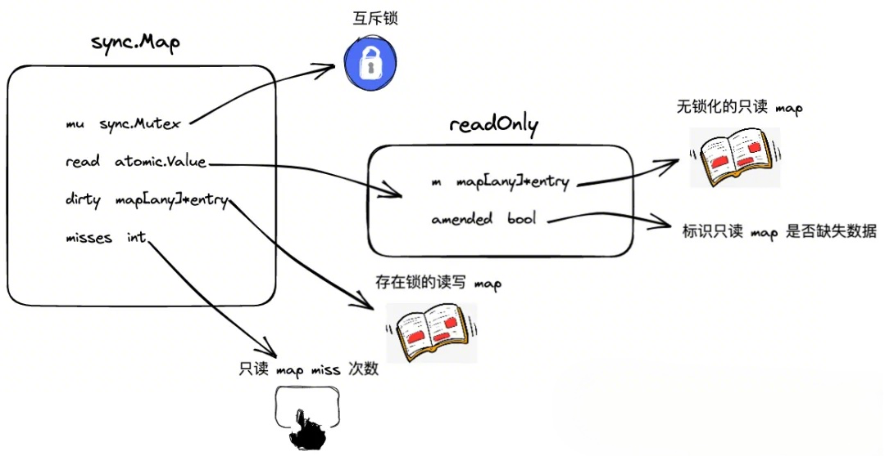

[Go] sync.Map
在 golang 中, map 并不保证并发安全的安全性, 对 map 进行并发读写会导致严重的错误, sync 标准包下的 sync.Map 解决了这一问题.
1 数据结构
1.1 sync.Map

1 | type Map struct { |
- read：无锁化的只读 map，实际类型为 readOnly
- dirty：加锁处理的读写 map
- misses：记录访问 read 的失效次数，累计达到阈值时，会进行 read map/dirty map 的更新轮换
- mu：一把互斥锁，实现 dirty 和 misses 的并发管理
- sync.Map 的特点是冗余了两份 map：read map 和 dirty map
1.2 entry 及对应的几种状态
1 | type entry struct { |
- kv 对中的 value，统一采用 unsafe.Pointer 的形式进行存储，通过 entry.p 的指针进行链接
- entry.p 的指向分为三种情况：
- 存活态：正常指向元素
- 软删除态：指向 nil, nil 态表示软删除，read map 和 dirty map 底层的 map 结构仍存在 key-entry 对，但在逻辑上该 key-entry 对已经被删除，因此无法被用户查询到
- 硬删除态：指向固定的全局变量 expunged, expunged 态表示硬删除，dirty map 中已不存在该 key-entry 对